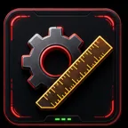
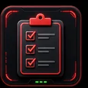
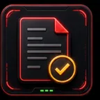

KNT Classroom
พื้นที่ทำงานสำหรับครู เช็กชื่อและติดตามงาน
เปิดใช้งานเครื่องมือที่ต้องใช้ อยู่ใกล้แค่คลิกเดียว
เรียนรู้ให้เข้าใจ
จัดการห้องเรียนให้ง่ายขึ้น
15 เครื่องมือ พร้อมให้เลือกใช้งาน
พื้นที่ทำงานสำหรับครู เช็กชื่อและติดตามงาน
เปิดใช้งานบันทึกมา สาย ลา และขาดตามคาบเรียน
เปิดใช้งาน
เช็กชื่อห้องเรียนพิเศษ ม.4–ม.6
เปิดใช้งาน
งานและคะแนนตรวจงาน สแกนการ์ด และติดตามงานค้าง
เปิดใช้งาน
เรียนและสอบทำข้อสอบตามที่คุณครูกำหนด
เปิดใช้งานค้นหาผลคะแนนและรายการที่ต้องแก้ไข
เปิดใช้งานทบทวนเนื้อหาและทำแบบฝึกหัด ม.4
เปิดใช้งานฝึกโจทย์ ทดสอบ และทบทวนจุดที่ยังไม่เข้าใจ
เปิดใช้งานกรอกคะแนนและสรุปผลการเรียน
เปิดใช้งานกิจกรรมเป็ดแข่งวิ่ง 3D ในห้องเรียน
เปิดใช้งานเล่น ฝึกตรรกะ และคิดร่วมกัน
เปิดใช้งานใช้กล้องครูสแกนการ์ดคำตอบในห้อง
เปิดใช้งานตรวจรายรับ รายจ่าย และหลักฐานการโอน
เปิดใช้งานจัดพิมพ์การ์ดนักเรียนรายบุคคล
เปิดใช้งานสร้างคิวอาร์โค้ดจากข้อความหรือลิงก์
เปิดใช้งาน